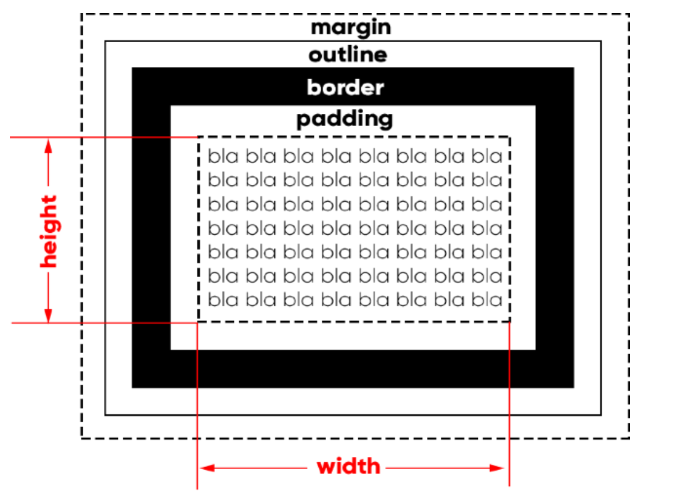

Resumindo de maneira simples, a maioria dos elementos HTML são como caixas. São como containers que armazenam conteúdos ou até mesmo outras caixas. Quando você cria um seletor, por exemplo, para h1, você está configurando a caixa que está exibindo esse elemento.
Alguns exemplos de atributos:


Padding é o espaço entre o border e o conteúdo. A tradução para padding pode ser: acolchoamento ou preenchimento

Padding é o espaço interno da caixa, já o margin é o espaço externo do border

outline pode ser traduzido como "contorno" ou "traçado". Ele é um contorno no border, fora do elemento.
Resumindo tudo.
Quebra a linha após iniciar uma caixa.
Não quebra a linha após iniciar uma caixa uma caixa.